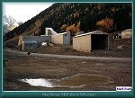
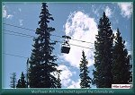
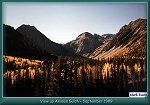
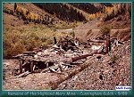
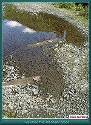
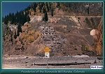
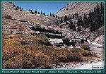

Contributed by Mark L. Evans
Photos by Miles A. Lumbard and Mark L. Evans
| The mountains above Silverton have many 4X4 trails that I can recommend. The trip to Animas Forks can be traveled in the family car as far as Eureka then four wheel drive is required to reach Animas Forks. Follow State Road 110 East out of Silverton. There were a few interesting ruins left from the mining industry when I was last in the area. The Shenandoah-Dives mine and tailings pile is visible just a short time after you begin up the road to Animas Forks. The large Mayflower mill complex was still in operation at the time of my last trip in 1989. |
| Just above the Mayflower mill the road to Arastra Gulch crosses the Animas River. On my last trip the bridge was under repair so I do not have a first hand description of the area. The remnants of the Silver Lake and Iowa-Tiger mines are much more intact than those of other mines in the area because they can only be reached on foot. Arastra Gulch was the site of the first big discovery in the Silverton area. The Little Giant mine was discovered in 1868, and set of the rush that brought many miners into the region. |
| Cunningham Gulch is located just above Arastra Gulch at the juncture of Cunningham Creek, and the Animas River. The road is passable by passenger car part of the way. Cunningham Gulch was once the home of the County Seat before Silverton eclipsed it in importance. There were several remains up the gulch that I found interesting. The most impressive structure from the mining period is the Buffalo Boy Tram House. When I was last there, a family had remodeled it and taken up residence. The cables of the tramway still went up the side of Canby Mountain to the mine high above. The remains of the Highland Mary mine were also quite evident. If you want a little more excitement, take the road over Stoney Pass. This trail was once the only way into Silverton and was the first route used when prospectors entered the area in 1860. |
| Farther up State Road 110 one will find the former site of Eureka. Eureka was a real boom town at the turn of the century. The massive Sunnyside Mill dominated the landscape, and employed most of the men in Eureka. The mill continued to operate until the 1940's when it finally closed. The Sunnyside and Gold King mines, high above Eureka continue to be worked off and on. Large trucks now haul the ore out rather than the little narrow gauge trains of the Silverton Northern Railroad. The townsite of Eureka is devoid of structures but the foundation of the once great Sunnyside Mine was still there for all to see. This must have been an imposing building because the foundation it self is huge. |
| As you continue up the road you can choose two different routes to reach Animas Forks. Both are passable only by four-wheel drive vehicles. You can continue on the road bed of the Silverton Northern Railroad or take the long way via Picayune Gulch. |
| The old road bed is easier but is still steep. When construction of this section of roadbed was complete, its cost was the highest per mile on any of the three railroads that originated in Silverton. The day I went, a culvert had washed out. This made a very deep rut that I had to negotiate. I dropped down into the rut about ten feet then climbed back out. It was really muddy and added a bit of excitement to the trip. The road could probably be traveled by car in dry weather but an unexpected wash out like this would put an end to your trip. |
| The other route to Animas Forks, via Picayune Gulch, takes a lot longer to complete but is by far the more interesting one. They mark the turn off for this route, and it is about two and one-half miles above Eureka. The road will take you along the face of Treasure Mountain then almost to the top of Hanson Peak. After you reach Hanson Peak, the road turns down into Mastodon Basin. At the top of the basin you will find the ruins of the famous Gold Prince Mine. The Gold Prince Mine was the source of ore for the Gold Prince Mill in Animas Forks. Take a minute to enjoy the solitude of this area but be careful because you are at an elevation of 12,800 feet. The lack of oxygen at this elevation will take your breath away. Follow the old tramway down into Animas Forks. The fact that this tramway is still erect says a lot about the handiwork of the early carpenters. |
| Once you arrive at Animas Forks, by either of the above routes, the remains of the Gold Prince Mill are very evident. The Gold Prince Mill was the largest in Colorado at the time of its construction. The large two story house with the bay window is reported to have been occupied by Thomas F. Walsh, who owned the fabulous Camp Bird mine above Ouray. The truth is, Walsh never lived in Animas Forks anytime. Several other structures also remain including several homes and the old town jail. |
| Once you have completed your visit at Animas Forks, four-wheel drive vehicles can follow three other trails. The road on the left continues up California Gulch, crosses Hurricane Pass then drops down to Lake Como. The road in the center goes up to Mineral Point then over Engineer Pass to Lake City. This road was one proposed route to Lake City for the Silverton Northern Railroad when it was incorporated. The last of the three roads out of Animas Forks limbs over Cinnamon Pass to arrive at Lake City. |
|
 |
Mayflower Mill above Silverton
(41k) |

|
 |
Mayflower Tram Bucket against the Colorado sky
(141k) |

|
 |
Looking up Arrastra Gulch from the road to Animas Forks
(58k) |


|
Looking up Arrastra Gulch from the road to Animas Forks
(104k) |

|
Buffalo Boy Tramhouse
(58k) |
|
 |
Remains of the Highland Mary Mine
(64k) |

|
 |
Remains of the Ties along the old SNRR grade
(140k) |

|
 |
Ruins of the Sunnyside Mill
(66k) |

|
 |
Ruins of the Gold Prince Mill
(110k) |


|
The Narrow Gauge Circle is written, maintained,and hosted by: Mark L. Evans Send Comments to:Mark L. Evans All original materials, text, and digital images Copyright © 1996-2017 Mark L. Evans. All rights reserved. Imitation is said to be the "sincerest" form of flattery.....Please don't flatter us without permission. |